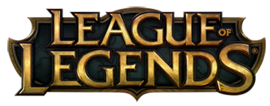

Hello! My name is Robert Bleattler, a self-pronounced nerd, IT major, Gamer, music addict, and off-roading enthusiast. I am 22 years old, and currently I'm studying Information Technology at Peirce College. I have always had a deep seeded interest in technology, from the first time I picked up an ATARI 2600 game cartridge at 4 years old.
In the past couple of years, my personal gaming interest has shifted from MMORPGs (Massively Multiplayer Online Role Playing Games) and console FPS (First Person Shooter) games to the realm of MOBA, specifically League of Legends. Currently, I spend about 20 hours per week playing video games.
In my 22 years on this earth, the vast majority of it has been spent completely enthralled with technology and video games. I can still remember, as just a toddler, seeing my uncle playing 8 bit games on a Nintendo Entertainment System in my grandmother's apartment. It became apparent to my family that video games interested me, so consoles were passed down, and so it began (the "obsession" some might say).
Through the years, I always had video games to keep me company, even when everything else was out of the question, and so, I honed my abilities, and my focus when playing them. I found that in the late 90's there was blooming a multiplayer base for many games on PC, and even some consoles. This blew my mind, and I knew that I had to get involved. I quickly installed games like Blizzard Entertainment's Diablo II on my computer, and began taking part in the adventure with other players.
From my first multiplayer experience, my gaming bloomed into what some might call an addiction, but I consider to be something much different. I started playing a plethora of different games, from FPS, RTS, RPG, to MMORPG, and text based games. Finally in the late 2000's I narrowed my interests to a select few game types, after a 5 year problem-like stint playing World of Warcraft to simply playing console FPS games, and learning about MOBA.
 Most recently, my interest has shifted specifically and only to MOBA games. I personally have played over 1100 games in the past 2 years, with most games lasting anywhere between 20 minutes and an hour. Personally, I have tried my hand at all of the popular MOBA games, and found that I can only stay enthralled with League of Legends; the most played, and most popular MOBA game in the world.